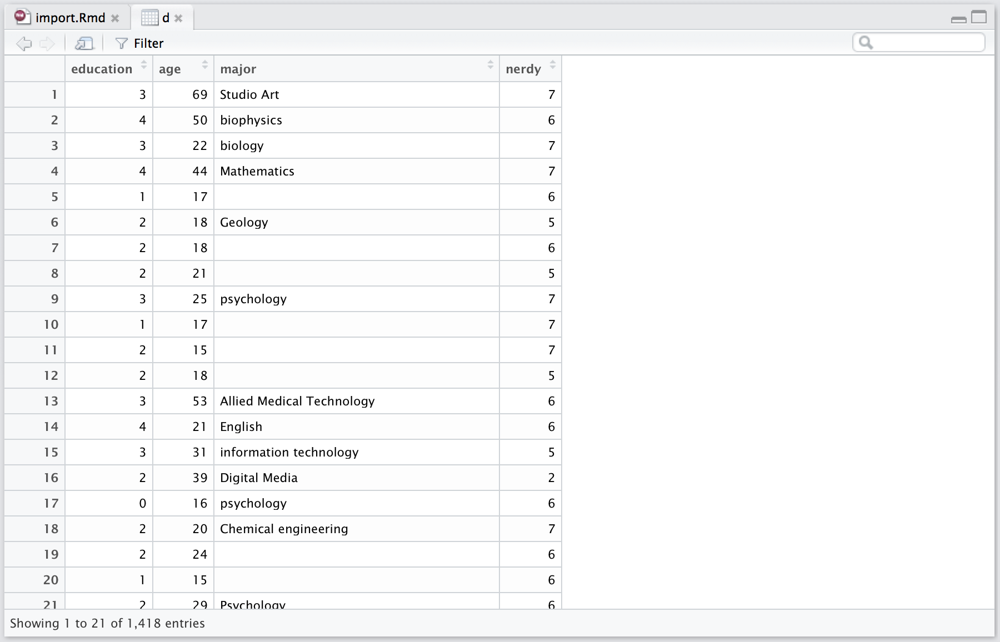

Importing data to R
Matti Vuorre
Introduction
In SPSS or Excel, importing data is fairly self-explanatory: The user clicks through various menu items to locate the relevant data file in the computer’s hard drive, and opens the file. In R, the analoguous operation is to read data to the environment (the environment is just an abstract collection of objects that R has access to.) Here, we’ll locate data on the hard drive using RStudio’s file dialogue, import the file to the workspace, and print its content’s in the console. After learning how to work with a single source data file, we’ll cover how to import multiple source data files to R and combine them into a single object.
Single source data file
This example data is a file downloaded from http://personality-testing.info/_rawdata/, and contains answers to the Nerdy Personality Attributes Scale, along with some demographic variables. I have removed some variables from the file that are not relevant for the present purposes.
Locating the data file
If you have downloaded the toolbox materials, the relevant folder for this tutorial is /toolbox/. So, we can fire up RStudio and navigate to the folder using RStudio’s file navigator, and set it as the working directory by clicking More -> Set as Working Directory in the Files panel of RStudio.
The data file is in /toolbox/data/nerdy/ and is called NPAS-data.csv. To find it, recall where you placed the /toolbox/ folder on your computer. The .csv extension means that the data are in a Comma Separated Values format, which is a common format for data; any Excel spreadsheet, for example, can be exported as a .csv, and both Excel and SPSS can open .csv files. There is also a codebook.txt file, detailing what the various variables in the .csv file mean.
It’s important to recognize that R only looks for external files in the current working directory. You can see the current working directory on top of the R console, or print it in the console by typing getwd() and pressing return.
Importing the data file
Now that we know the location and name of the data file, and the current working directory, we can ask R to read the .csv file from the data/ folder by using the relative path to the file. To read files to the R environment, we need a function that does just that: read.csv(). Assuming that your working directory is the /toolbox/ folder, the command is
d <- read.csv("data/nerdy/NPAS-data.csv")The above function, read.csv() takes multiple arguments, but for the present purposes we only passed the location and name of the file to it, as a text string, and save the function call to d. d now contains the contents of the .csv in a format that R understands, namely, it is a data.frame.
Why did we write read.csv("data/nerdy/NPAS-data.csv") instead of read.csv(data/nerdy/NPAS-data.csv)? Enclosing a string of text into quotation marks in R means that you are referring to a string of text, which is appropriate in this case. If you leave out the quotation marks, R thinks that you are talking about an object, which is not found in the R environment.
As a result of executing d <- read.csv("data/nerdy/NPAS-data.csv"), there is now an object in the R environment, called d:

Show me the data
Now that d is in the R environment, we can look at it in various ways. If you click on the little blue arrow next to d in the Environment pane, you’ll get a quick overview of what d contains:

First, you’ll see that there are 1418 observations (rows) and 4 variables (columns). Clicking the arrow reveals the names, types, and first 10 values of each of these columns. Clicking on d itself (in the Environment pane) opens up the data viewer, which is very useful for looking at the data in a format familiar from SPSS and Excel:

This view reveals more of the actual values of the variables, and you can scroll up and down to inspect the entire data.frame.
Finally, we’ll view the data within the R console, by typing a few simple commands. There are two very useful functions to quickly look at the data: str() and head(). str() prints out the structure of the data.frame:
str(d)## 'data.frame': 1445 obs. of 4 variables:
## $ education: int 3 4 3 4 1 2 2 2 3 1 ...
## $ age : int 69 50 22 44 17 18 18 21 25 17 ...
## $ major : Factor w/ 404 levels ""," None yet",..: 395 79 70 288 1 220 1 1 363 1 ...
## $ nerdy : int 7 6 7 7 6 5 6 5 7 7 ...And head() shows the first six rows of the data.frame:
head(d)## education age major nerdy
## 1 3 69 Studio Art 7
## 2 4 50 biophysics 6
## 3 3 22 biology 7
## 4 4 44 Mathematics 7
## 5 1 17 6
## 6 2 18 Geology 5You could also print out the entire contents of the data.frame, but 1418 rows would result in an information overflow, so I won’t show the results of doing that. You can try it by typing d in the console, and hitting return.
dresults not shown
Figure
Usually, the best way to investigate data is by looking at figures. I’ll draw one here, but won’t reveal the code quite yet, as plotting is covered in later tutorials. By following through the toolbox tutorials, you’ll be able to draw similar plots in no time!

Mean nerdiness (±1 SEM) for most common majors.
Psychology, highlighted in red, sits comfortably in the middle. Of interest is also the fact that people who reported their major as “math” instead of mathematics reported lower nerdiness scores, although they have the same major.
Now that we’ve covered working with a single source data file, we’ll move on to multiple source data files.
Multiple source files
In psychology, it is common to have multiple source data files that need to be combined for statistical analyses. For example, an experiment might produce a data file for each participant: In this case, the shape of the data is always the same (same variables collected on every participant, and possibly an equal amount of observations [rows]). Another example is a multi-site project, where, for example, multiple investigators collected personality questionnaires in various countries. Again, these files need to be combined for analyzing each country’s data together. I’ll use this latter case as an example.
In this example, we’ll learn to work with multiple source data files using the same data as in the questionnaire data project. These data are responses to the Big Five personality questionnaire from over 100 countries, and are freely available here (open data wins again!).
Show your work
In order to analyse all the data in R (or any other program), the files need to be combined into one object within the programming environment. Additionally, we can create a shortcut for later analyses by saving this “master” data object into a file. However, it is crucial that you don’t just save this new master file, but also the first step in the data analytic pipeline: The merging of multiple source files. After all, it is possible that we commit an error at this stage, and if we haven’t detailed what happened at this stage, we will not know what that error was, or how it influenced the data we analysed. Therefore, I strongly recommend saving the R script that produces master data frames from raw data. This constitutes the first note on the paper trail we leave for future investigators, including your future self. Now that we’re motivated to begin a reproducible workflow, let’s locate the files.
Locating the files
The raw data downloaded from the website is a neat and simple spreadsheet, but for our purposes, I’ve split the data into separate files by country. To look at the source files, we use the list.files() function that simply takes a path as input, and shows what’s in that path. These data are located in data/countries/.
file_path <- "data/big5/countries/"
length(list.files(file_path)) # How many files are there?
list.files(file_path)[1:5] # Show first 5 names## [1] 155
## [1] "AE.csv" "AG.csv" "AL.csv" "AO.csv" "AP.csv"The [1:5] means that I would only like to access elements 1 through 10 of this object, i.e. the first ten names. We would certainly like to avoid manually copying and pasting these 155 files into one master file in Excel. Fortunately, programming allows us to DRY, and we can load and merge these data with a few lines of code.
Before we begin, make sure that your working directory is set by running getwd(): It should be the toolbox/ folder.
Merging two data files
The first step is to investigate what the shape of the data is, so let’s read and investigate a single source file, the Big Five questionnaire responses from Papua New Guinea.
pg <- read.csv("data/big5/countries/PG.csv")
str(pg)## 'data.frame': 2 obs. of 57 variables:
## $ race : int 3 13
## $ age : int 30 47
## $ engnat : int 1 2
## $ gender : int 1 1
## $ hand : int 1 1
## $ source : int 1 1
## $ country: Factor w/ 1 level "PG": 1 1
## $ E1 : int 4 1
## $ E2 : int 1 2
## $ E3 : int 3 3
## $ E4 : int 2 4
## $ E5 : int 5 4
## $ E6 : int 2 3
## $ E7 : int 5 3
## $ E8 : int 2 4
## $ E9 : int 3 3
## $ E10 : int 2 4
## $ N1 : int 5 2
## $ N2 : int 3 1
## $ N3 : int 5 4
## $ N4 : int 1 4
## $ N5 : int 5 5
## $ N6 : int 4 4
## $ N7 : int 2 5
## $ N8 : int 4 2
## $ N9 : int 4 3
## $ N10 : int 4 4
## $ A1 : int 3 3
## $ A2 : int 5 3
## $ A3 : int 3 2
## $ A4 : int 5 4
## $ A5 : int 2 3
## $ A6 : int 5 4
## $ A7 : int 2 2
## $ A8 : int 5 3
## $ A9 : int 4 4
## $ A10 : int 4 4
## $ C1 : int 2 4
## $ C2 : int 4 3
## $ C3 : int 2 3
## $ C4 : int 4 3
## $ C5 : int 2 2
## $ C6 : int 5 3
## $ C7 : int 3 5
## $ C8 : int 4 4
## $ C9 : int 2 2
## $ C10 : int 3 2
## $ O1 : int 5 5
## $ O2 : int 1 3
## $ O3 : int 5 2
## $ O4 : int 1 5
## $ O5 : int 4 5
## $ O6 : int 1 2
## $ O7 : int 4 4
## $ O8 : int 5 4
## $ O9 : int 5 2
## $ O10 : int 4 5To learn about what I called the shape of the data, we need to know its dimensions. These are listed on top of the displayed output, above. The object pg is a data frame with 2 rows and 57 columns. Each row is an observation, and each column is a variable. The easiest merging operation would be to add more rows to this data from a data frame that has the same columns, such as the data collected in Guatemala:
gt <- read.csv("data/big5/countries/GT.csv")This data frame also has 57 columns, and both data sets are two-dimensional1. To merge these data sets, we simply need to bind them by row. But before we merge data frames, we need to be sure that the columns mean the same thing in both. One way to do this is to inspect the names of the columns, and make sure that they match up. The names() function returns the column names of the data frame, and we can compare the names of two data frames by comparing them with the logical == (equals) operator:
names(pg) == names(gt)## [1] TRUE TRUE TRUE TRUE TRUE TRUE TRUE TRUE TRUE TRUE TRUE TRUE TRUE TRUE
## [15] TRUE TRUE TRUE TRUE TRUE TRUE TRUE TRUE TRUE TRUE TRUE TRUE TRUE TRUE
## [29] TRUE TRUE TRUE TRUE TRUE TRUE TRUE TRUE TRUE TRUE TRUE TRUE TRUE TRUE
## [43] TRUE TRUE TRUE TRUE TRUE TRUE TRUE TRUE TRUE TRUE TRUE TRUE TRUE TRUE
## [57] TRUEThe equality between each column name in pg and gt is TRUE. This is machine language for: “Stuff’s the same.” We can therefore proceed and bind the data frames by row. For this task, Rs built-in rbind() is the right tool:
pg_and_gt <- rbind(pg, gt)Job done! Although we were able to efficiently combine two source data files with this procedure, many projects, such as this one, can have hundreds of source data files, and we wouldn’t want to write out read.csv("XX.csv") for each of the files separately. Therefore we’ll write a function that reads an arbitrary number of data files into a single object!
Merging more than two data files
A common task, such as this one, has of course been solved many times over, and we shouldn’t be wasting our time reinventing the wheel. We therefore will use a function that another R user has already shared on the excellent open-source programming platform GitHub.
Creating a function
What follows is based on this function, but I’ve tweaked it a little bit. First, here is what the function looks like:
batch_read <- function(path, extension) {
file_names <- list.files(path, pattern = extension)
data_list <- lapply(paste0(path, file_names), read.csv)
data_frame <- bind_rows(data_list)
data_frame
}batch_read # Call a function without () to show the methods it contains## function(path, extension) {
## file_names <- list.files(path, pattern = extension)
## data_list <- lapply(paste0(path, file_names), read.csv)
## data_frame <- bind_rows(data_list)
## data_frame
## }Perhaps you can intuit that this function executes all the steps we already did above, but instead of merging two files, the function can merge a whole list of files! The printout above describes batch_read() as a function that takes two arguments: path and extension. When this function is executed, it first lists files in path whose filename include extension. This is extremely helpful, because the function now only reads files that have our pre-specified extension, and ignores all other file types. This list of file names is saved to file_names.
The second line is a little more complicated, but not much! (One reason it looks more complicated than it is has to do with nesting functions vs. piping functions). The innermost function paste0() concatenates multiple text strings together, without spaces (hence paste0 instead of paste):
string1 <- "Hello"
string2 <- "world!"
paste(string1, string2)## [1] "Hello world!"paste0(string1, string2)## [1] "Helloworld!"Because path is a text string, and file_names is a list of text strings, the result is a new list of text strings. The result of paste0(path, file_names) is then passed to lapply(), which simply means list apply. lapply() takes as its first argument a list, here the list of file names. The second argument to lapply() is the function to apply to the list: We want to read.csv(). This line, therefore, reads a list of csv files, and saves the list into data_list: A list containing a whole bunch of data frames create by repeatedly applying read.csv() to file names in the list of names.
A final step remains: The list needs to be unpacked into a data frame. We simply passed the list of data frames (data_list) to bind_rows(), which then created a single object (called data_frame). The last line of the function definition specifies what is to be returned when a user calls this function.
I said before that programming is hard. You learn it by doing it. The preceding discussion is abstract and elusive and we will learn faster by implementing the function ourselves. To create this function, type the following code into your R script, and run it:
library(dplyr) # We need this for the bind_rows() function
batch_read <- function(path, extension) {
file_names <- list.files(path, pattern = extension)
data_list <- lapply(paste0(path, file_names), read.csv)
data_frame <- bind_rows(data_list)
data_frame
}If you now look at your Environment pane in RStudio, you’ll see batch_read under the Functions label. You can now call this function by typing in batch_read(folder_where_revolutionary_data_lives, file_extension). Brilliant!
Read multiple files with batch_read()
Let’s put our shiny new batch_read() to use and load our data. Recall that file_path is an object that simply contains, as a text string, the folder where the country-specific data files are: data/big5/countries/
d <- batch_read(file_path, ".csv")There! We read all the .csv files in file_path (data/big5/countries/). If we would like to save the new master data file as a single .csv, we could run the following code:
write_csv(d, path = "data/big5/master-data.csv")View combined data
d now contains all the Big Five questionnaire responses, from all the data files:
dim(d)## [1] 19324 5719324 rows and 57 columns. That’s a lot of data. To get to work with these data, take a look at the questionnaire data tutorial.
Bonus round
This was a pretty boring, but important, project, so let’s do something fun at the end. The country names in d are two letter codes (ISO 3166-1 alpha-2 codes, specifically):
c(unique(d$country)[1:20], "...") # Print first 20 ISO2 labels and an ellipsis## [1] "AE" "AG" "AL" "AO" "AP" "AR" "AS" "AT" "AU" "AZ" "BA"
## [12] "BB" "BD" "BE" "BF" "BG" "BH" "BM" "BN" "BO" "..."It would be very informative if we could convert them to actual country names. Well, there’s an R package for that:
library(countrycode) # Install if necessary
d$country <- countrycode(sourcevar = d$country, # Source variable
origin = "iso2c", # Coding scheme
destination = "country.name") # I want their names!
c(unique(d$country)[1:20], "...") # Print again## [1] "United Arab Emirates" "Antigua and Barbuda"
## [3] "Albania" "Angola"
## [5] NA "Argentina"
## [7] "American Samoa" "Austria"
## [9] "Australia" "Azerbaijan"
## [11] "Bosnia and Herzegovina" "Barbados"
## [13] "Bangladesh" "Belgium"
## [15] "Burkina Faso" "Bulgaria"
## [17] "Bahrain" "Bermuda"
## [19] "Brunei Darussalam" "Bolivia, Plurinational State of"
## [21] "..."And finally, we’ll print out some arbitrary plot, and you should try to figure out what the code here does. If you are unsure about all the mutate()s etc. please refer back to the questionnaire data project.
filter(d, !is.na(country)) %>%
group_by(country) %>%
mutate(N = n()) %>%
ungroup() %>%
filter(N > 100) %>%
mutate(country = reorder(country, N)) %>%
ggplot(aes(x = N, y = country)) +
geom_point()
TRUE
Two-dimensional data simply means that it has rows and columns. One-dimensional data would be a vector: A simple sequence of values. By and large, we deal with two-dimensional data (such as you see when you stare at an Excel spreadsheet), but data can take any number of dimensions. Think about what three-dimensional data would look like.↩